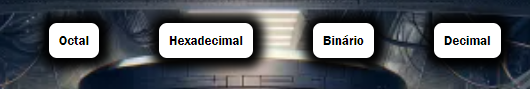
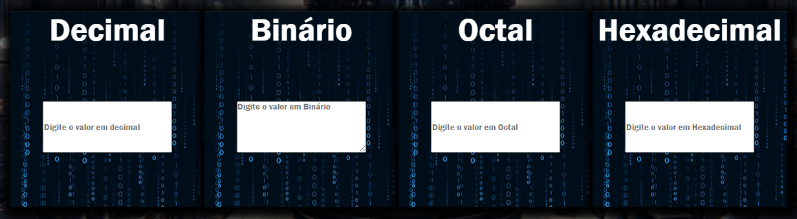
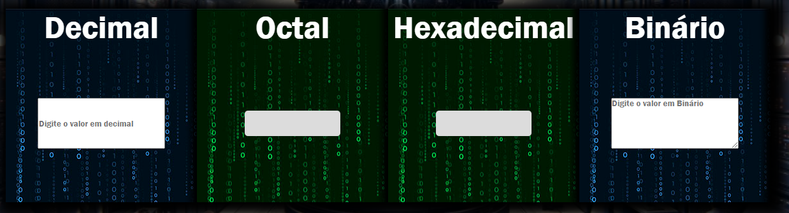
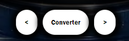

Olá, está com dúvida de como utilizar a calculadora ?

Esses botões servem para "Ativar as bases" para ver os resultados que são representados pelo "input Verde".

Esses são os "input Azul" é nele que você esceverá o número correspondente a base escolhida.

Ao clicar nos botões de ativação das bases os "Input Verde" irão aparecer, é nele que sairá a resposta, você pode ativar e desativar qualquer base, Vale ressaltar que o começo de um "input Azul" é o final do "Input Azul" anterior, ou seja, os "Input Verde" corresponde ao "Input Azul" da esquerda.

E por fim temos os botões de left - right, você pode navegar pelo slider com o touch do celular, com os 2 dedos no touchpad do notbook ou clicando nesses botões, o botõa converter mostras as respostas das bases convertidas.
Pronto para usar ?
clique aqui.